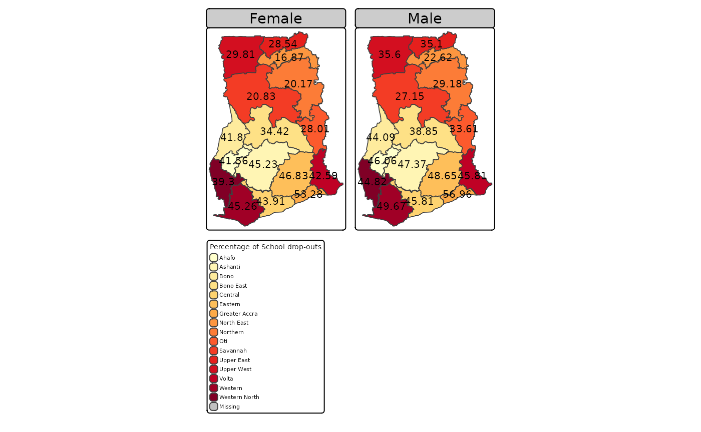
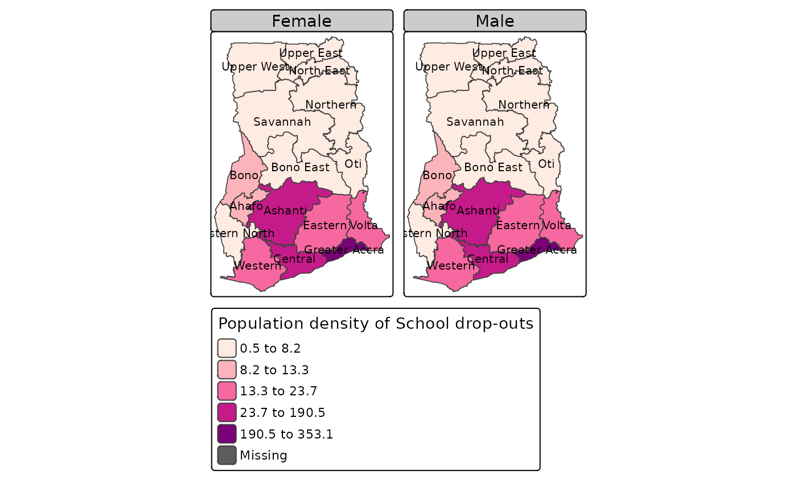

Choropleth_map_Ghana_2021_School_Attendance_Indicators
Source:vignettes/Choropleth_map_Ghana_2021_School_Attendance_Indicators.Rmd
Choropleth_map_Ghana_2021_School_Attendance_Indicators.RmdLoad required packages
library(rGhanaCensus)
library(sf)
#> Linking to GEOS 3.8.0, GDAL 3.0.4, PROJ 6.3.1; sf_use_s2() is TRUE
library(tmap)
library(dplyr)
#>
#> Attaching package: 'dplyr'
#> The following objects are masked from 'package:stats':
#>
#> filter, lag
#> The following objects are masked from 'package:base':
#>
#> intersect, setdiff, setequal, union
library(magrittr)Example 1
Create a interactive map with the package tmap and data from the package rGhanaCensus that displays the regional distribution of the Percentage of students 3 years or older who have dropped out of school.
Load geometry data Ghana_2021_school_attendance_geometry from rGhanaCensus package.
data("Ghana_2021_school_attendance_geometry", package = "rGhanaCensus")Convert it to sf data frame and assign a new name. In this example, “Ghana_edu_sf” will be the name of the sf data frame created.
Ghana_edu_sf<- sf::st_as_sf(Ghana_2021_school_attendance_geometry)The code Ghana_edu_sf %>%filter(Locality=="Urban") subsets the data frame and retains only the rows that the survey respondents came from Urban areas.
Ghana_edu_sf %>%filter(Locality=="Rural") can be used to retain observations from Rural areas.
Use tmap_mode("view") to create interactive map. A static map is plotted here with tmap_mode("plot")
Map displaying Percentage of School Drop-outs from Total Respondents in each Region
#Use tmap to create interactive map
tmap_mode("plot")
#> tmap mode set to plotting
Ghana_edu_sf %>%
dplyr::filter(Locality=="Urban") %>%
tm_shape()+
tm_polygons(id="Region", col="Region",palette="YlOrRd",
title="Percentage of School drop-outs")+
tm_text(text="Percent_Dropped_out_of_School", size=0.7)+
tm_facets(by="Gender")
The code tm_facets(by="Gender") specifies facets (multiple maps) by Gender.
Example 2
Create a interactive map with the package tmap and data from the package rGhanaCensus that displays the regional distribution of population densities of students 3 years or older who have dropped out of school.
#Load geometry data
data("Ghana_2021_school_attendance_geometry", package = "rGhanaCensus")
#Convert to sf data frame
Ghana_edu_sf<- sf::st_as_sf(Ghana_2021_school_attendance_geometry)Use tmap_mode("view") to create interactive map. A static map is plotted here with tmap_mode("plot") .
The convert2density argument in the tm_polygon function calculates the population density using the raw count values of the variable Dropped_out_of_School where the area size is in this case approximated from the shape object.
Map displaying the Regional Population Density of School Drop-outs
tmap_mode("plot")
#> tmap mode set to plotting
Ghana_edu_sf %>%
dplyr::filter(Locality=="Urban") %>%
tm_shape()+
tm_polygons(id="Region",col="Dropped_out_of_School", palette = "RdPu",
style="kmeans", convert2density = TRUE,
title="Population density of School drop-outs")+
tm_text(text="Region", size=0.7)+
tm_facets(by="Gender")